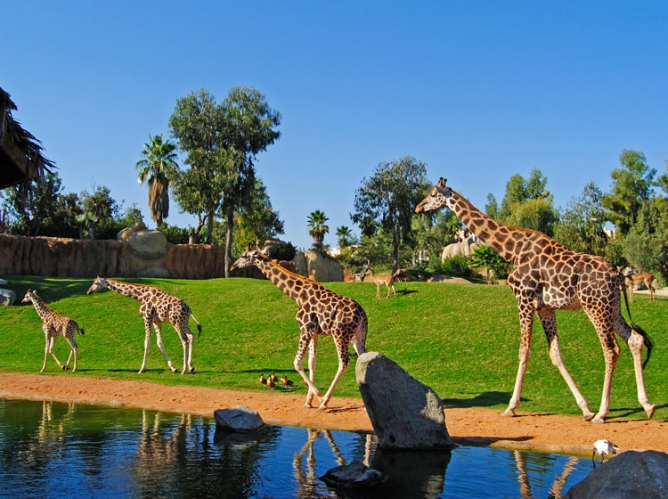

LAS JIRAFAS

Su hábitad recae en todo tipo de ambientes de sabana, si bien prefieren áreas ricas en acacias, los machos suelen aventurarse en el interior de densas arboledas en busca de más follaje. Debido a que sólo beben ocasionalmente, las jirafas pueden encontrarse lejos de fuentes de agua.
Realizan movimientos estacionales que cubren de 20 a 30 Km. Su actividad la realiza principalmente al atardecer y temprano en la mañana, mientras que el resto del día lo dedica a descansar. Generalmente duerme parada, pero pero ocasionalmente se echa.
Su dieta consta de hojas, ramas y flores principalmente de diferentes especies de acacia.
CARACTERÍSTICAS
- Es el animal más alto conocido, llegando a alcanzar los 6 metros.
- El largo cuello de las jirafas y las patas delanteras más largas que las traseras les permite alcanzar las hojas más altas de los árboles, evitando la competencia alimenticia con otros herbívoros. El hecho de tener un cuello tan largo es beneficioso también para tener una visión general de la sabana, evitando así posibles peligros.
- El pelaje de las jirafas es de color amarillo con grandes manchas irregulares de color pardo claro u oscuro. Las manchas del cuello y piernas son más pequeñas. Esta coloración les sirve para camuflarse en la sabana, simulando su ambiente y evitando a posibles depredadores. No duermen más de 5 minutos seguidos y quedan vulnerables a los leones y las hienas cuando bajan el cuello para beber agua.
- Esta especie está en serio peligro de extinción debido a la desertización de su hábitat y a la caza furtiva. Se estima que quedan unos 500 ejemplares en vida salvaje.
- Su periodo de gestación abarca un aproximado de 450 días.
- Su periodo de vida oscila entre 10-15 años en la naturaleza y de 20-27 años en cautividad.